Candidate List 20260716Last night — ZTF: 4,060 passed basic cuts (235 young) · LSST: 0 passed basic cuts (0 young)Previous Day Next Day
Section 1: New Sources (age<1d) Section 2: Old (1-5d) sources observed last nightplaceholder
Section 1: New Afterglow/FBOT Cands Last Night (3)
1. [ZTF] ZTF26abhidjm (Afterglow?) [Back to Top] [Share] [Trigger Swift] [Fritz Alert] [Fritz Source] [Lasair]RA, Dec: 271.5002, -1.74543 18h 6m0.05s, -1d-44m-43.53sGalactic (l, b): 26.13052, 9.28367 ext(g-r) = 1.469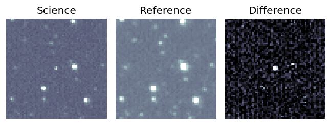
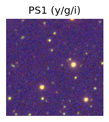

TESS: Sectors [ 80 118]
PS1: 1 source in 3 arcsec Closest: d = 4.34 arcsec photoz=0.65+/-0.32 peak abs mag = -26.64
LegacySurvey: 0 sources in 3 arcsec
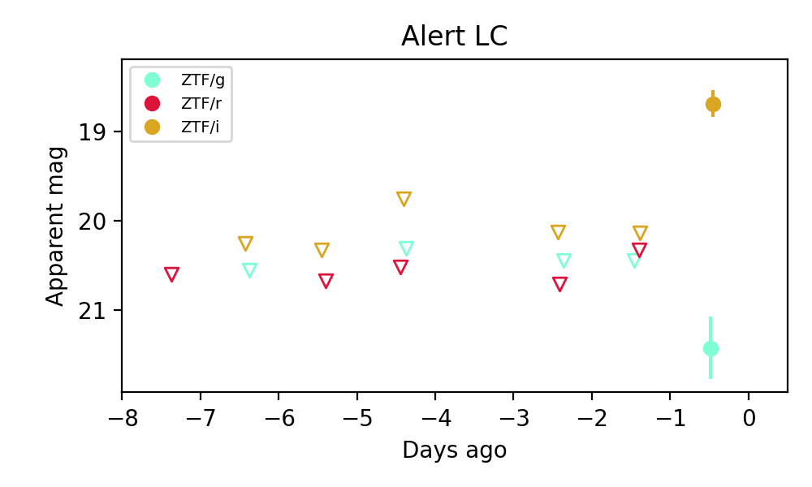
Extinction-corrected gi color:
From alerts: 0.48 +/- 0.38 mag
Consistent with synchrotron, g-r>0!
Rise Rate:
i: 1.54 mag/day
Fade Rate:
2. [ZTF] ZTF26abhjabv (Afterglow?) [Back to Top] [Share] [Trigger Swift] [Fritz Alert] [Fritz Source] [Lasair]RA, Dec: 253.6904, 5.74131 16h54m45.70s, 5d44m28.71sGalactic (l, b): 24.28679, 28.50329 ext(g-r) = 0.128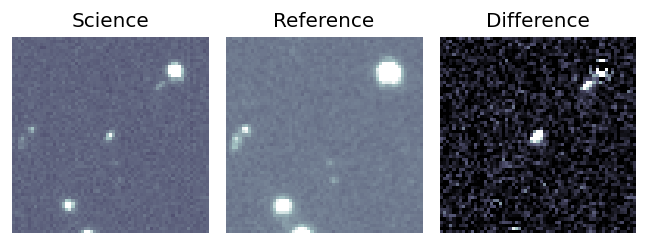
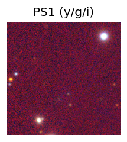
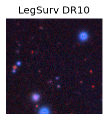
TESS: Sectors 117
PS1: 0 sources in 3 arcsec
LegacySurvey: 1 sources in 3 arcsec Closest: d = 9.03 arcsec, 193.4 deg (east of north) photoz=0.9 (68% bounds 0.01, 1.93), type=PSF peak abs mag = -25.0 (68% bounds -14.68, -27.05)
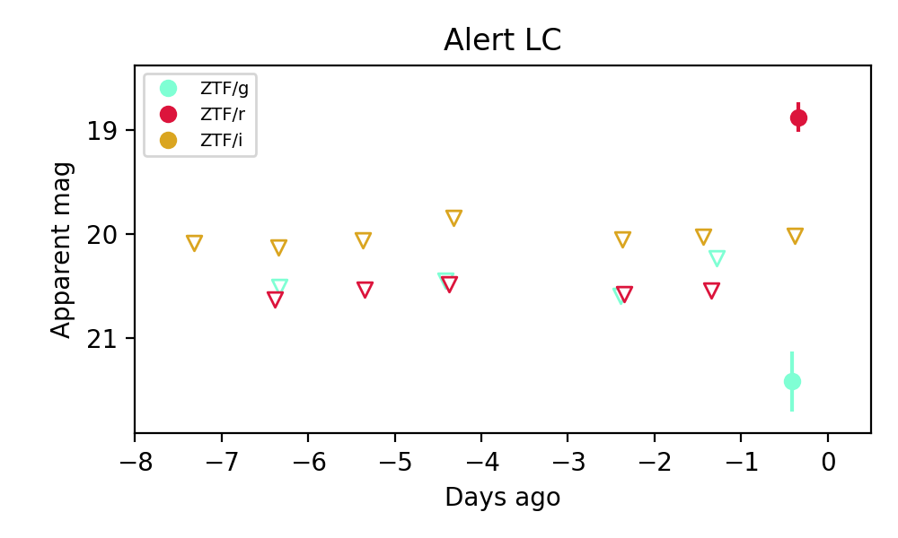
Extinction-corrected gr color:
From alerts: 2.42 +/- 0.33 mag
Extinction-corrected gi color:
From alerts: 1.2 +/- 99 mag
Extinction-corrected ri color:
From alerts: -1.21 +/- 99 mag
Consistent with synchrotron, g-r>0!
Rise Rate:
r: 1.64 mag/day
Fade Rate:
3. [ZTF] ZTF26abhjcuz (Afterglow?) [Back to Top] [Share] [Trigger Swift] [Fritz Alert] [Fritz Source] [Lasair]RA, Dec: 267.34381, 15.26508 17h49m22.51s, 15d15m54.30sGalactic (l, b): 40.0844, 20.47066 ext(g-r) = 0.101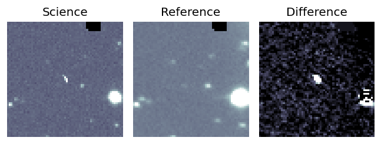
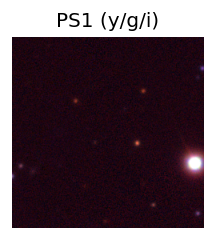
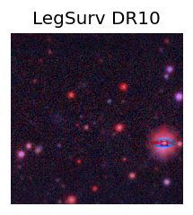
TESS: Sectors [ 26 53 79 80 118]
PS1: 0 sources in 3 arcsec
LegacySurvey: 1 sources in 3 arcsec Closest: d = 2.12 arcsec, 151.3 deg (east of north) photoz=0.77 (68% bounds 0.52, 1.28), type=PSF peak abs mag = -24.93 (68% bounds -23.91, -26.28)
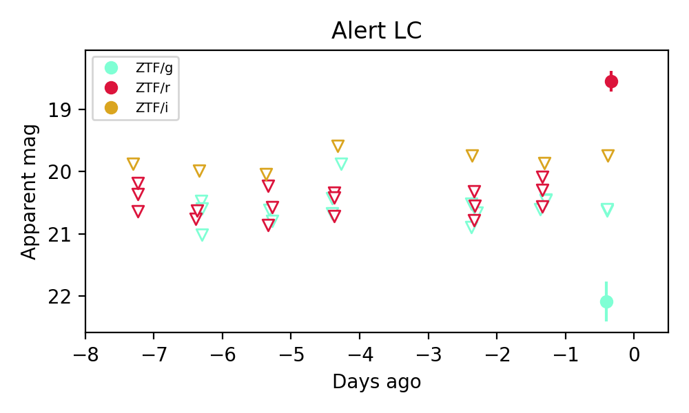
Extinction-corrected gr color:
From alerts: 3.45 +/- 0.36 mag
Extinction-corrected gi color:
From alerts: 2.2 +/- 99 mag
Extinction-corrected ri color:
From alerts: -1.26 +/- 99 mag
Consistent with synchrotron, g-r>0!
Rise Rate:
r: 2.02 mag/day
Fade Rate:
Section 2: Older Sources Observed Last Night (24)
0. [ZTF] ZTF26abfzped (Afterglow?) [Back to Top] [Share] [Trigger Swift] [Fritz Alert] [Fritz Source] [Lasair]RA, Dec: 290.70863, 15.60847 19h22m50.07s, 15d36m30.50sGalactic (l, b): 50.35602, 0.3225 ext(g-r) = 10.13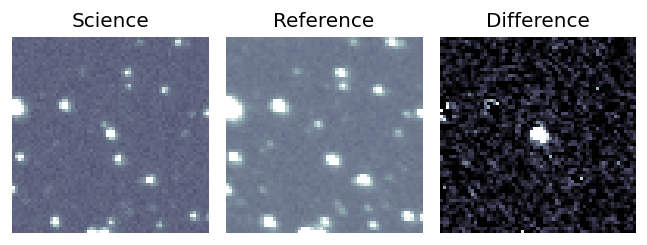
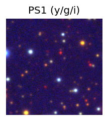

TESS: Sectors [ 14 40 54 81 119]
PS1: 0 sources in 3 arcsec
LegacySurvey: 0 sources in 3 arcsec
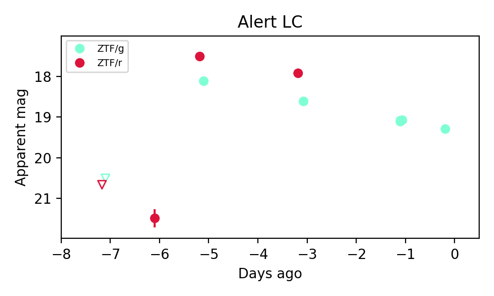
Extinction-corrected gr color:
From alerts: -9.44 +/- 0.12 mag
Rise Rate:
r: 1.59 mag/day
Fade Rate:
g: 0.23 mag/day
r: 0.1 mag/day
1. [ZTF] ZTF26abgajnt (Afterglow?) [Back to Top] [Share] [Trigger Swift] [Fritz Alert] [Fritz Source] [Lasair]RA, Dec: 299.89117, 40.20143 19h59m33.88s, 40d12m5.15sGalactic (l, b): 75.74148, 5.46434 ext(g-r) = 0.358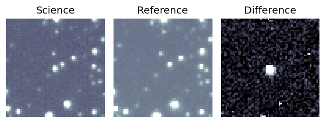
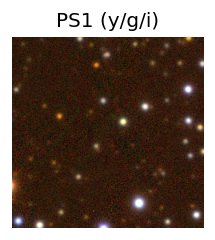

TESS: Sectors [14 15 41 54 55 75 81 82]
PS1: 0 sources in 3 arcsec
LegacySurvey: 0 sources in 3 arcsec
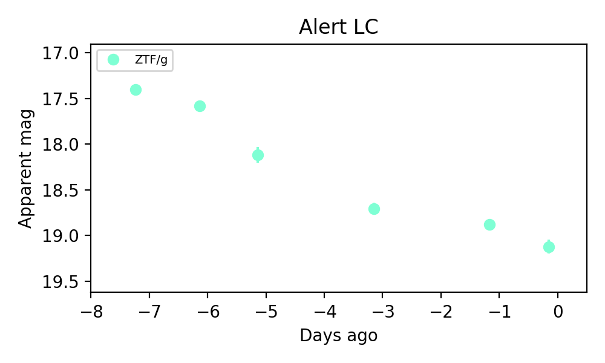
Rise Rate:
g: 1.64 mag/day
Fade Rate:
g: 0.26 mag/day
2. [ZTF] ZTF26abgjwnd (Afterglow?) [Back to Top] [Share] [Trigger Swift] [Fritz Alert] [Fritz Source] [Lasair]RA, Dec: 272.55643, 42.53344 18h10m13.54s, 42d32m0.37sGalactic (l, b): 69.69054, 25.18549 ext(g-r) = 0.056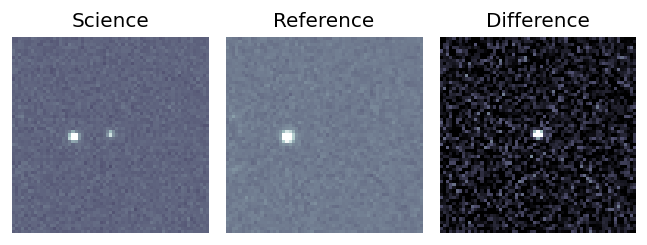
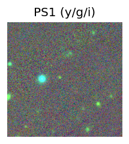
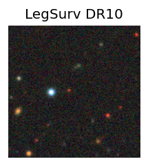
TESS: Sectors [ 25 26 40 52 54 74 79 80 81 119]
SDSS (<15 kpc):Found SDSS phot-z: z=0.79; peak abs mag = -23.93
PS1: 0 sources in 3 arcsec
LegacySurvey: 1 sources in 3 arcsec Closest: d = 2.85 arcsec, 79.6 deg (east of north) photoz=0.61 (68% bounds 0.42, 0.85), type=PSF peak abs mag = -23.1 (68% bounds -22.14, -23.95)
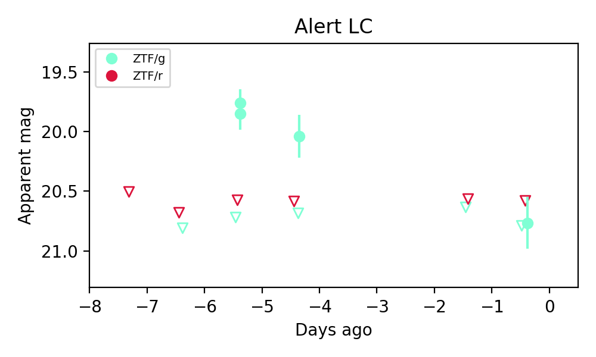
Extinction-corrected gr color:
From alerts: 0.13 +/- 99 mag
Rise Rate:
g: 39.51 mag/day
Fade Rate:
g: 0.91 mag/day
3. [ZTF] ZTF26abgoemj (FBOT?) [Back to Top] [Share] [Trigger Swift] [Fritz Alert] [Fritz Source] [Lasair]RA, Dec: 155.24757, 37.41415 10h20m59.42s, 37d24m50.93sGalactic (l, b): 185.29361, 56.82591 ext(g-r) = 0.01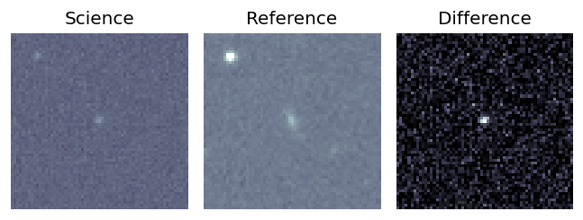
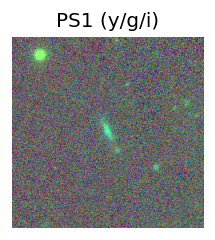
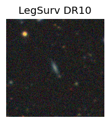
TESS: Sectors 21
SDSS (<15 kpc):Found SDSS phot-z: z=0.13; peak abs mag = -21.26
PS1: 0 sources in 3 arcsec
LegacySurvey: 1 sources in 3 arcsec Closest: d = 0.23 arcsec, 104.0 deg (east of north) photoz=0.1 (68% bounds 0.05, 0.17), type=EXP peak abs mag = -20.51 (68% bounds -18.92, -21.79)
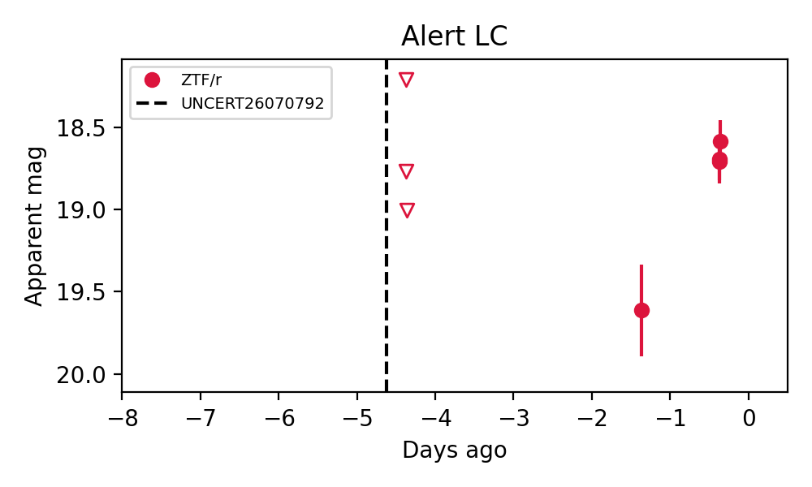
Rise Rate:
r: 0.24 mag/day
Fade Rate:
4. [ZTF] ZTF26abgvfty (FBOT?) [Back to Top] [Share] [Trigger Swift] [Fritz Alert] [Fritz Source] [Lasair]RA, Dec: 266.21331, 14.91474 17h44m51.19s, 14d54m53.07sGalactic (l, b): 39.27074, 21.32877 ext(g-r) = 0.096


TESS: Sectors [ 26 53 79 80 118]
PS1: 0 sources in 3 arcsec
LegacySurvey: 1 sources in 3 arcsec Closest: d = 0.41 arcsec, 321.9 deg (east of north) photoz=0.19 (68% bounds 0.15, 0.29), type=SER peak abs mag = -20.3 (68% bounds -19.65, -21.31)

Extinction-corrected gr color:
From alerts: -0.31 +/- 0.2 mag
Extinction-corrected gi color:
From alerts: -0.64 +/- 0.4 mag
Extinction-corrected ri color:
From alerts: -0.33 +/- 0.37 mag
Consistent with synchrotron, g-r>0!
Rise Rate:
g: 0.2 mag/day
r: 0.22 mag/day
Fade Rate:
5. [ZTF] ZTF26abgxhag (FBOT?) [Back to Top] [Share] [Trigger Swift] [Fritz Alert] [Fritz Source] [Lasair]RA, Dec: 339.27449, -5.85116 22h37m5.88s, -5d-51m-4.17sGalactic (l, b): 60.48864, -51.6321 WARNING: 2.67 deg from ecliptic plane ext(g-r) = 0.043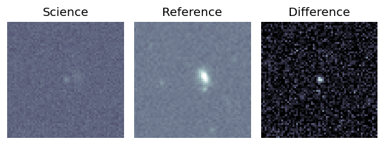
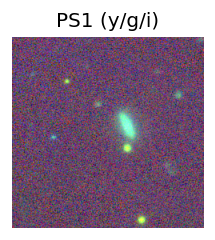
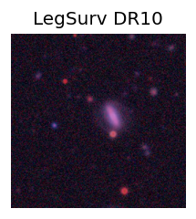
TESS: Sectors [70 92]
SDSS (<15 kpc):Found SDSS phot-z: z=0.13; peak abs mag = -19.88
PS1: 0 sources in 3 arcsec
LegacySurvey: 1 sources in 3 arcsec Closest: d = 2.27 arcsec, 312.0 deg (east of north) photoz=0.55 (68% bounds 0.28, 1.18), type=EXP peak abs mag = -23.41 (68% bounds -21.7, -25.43)
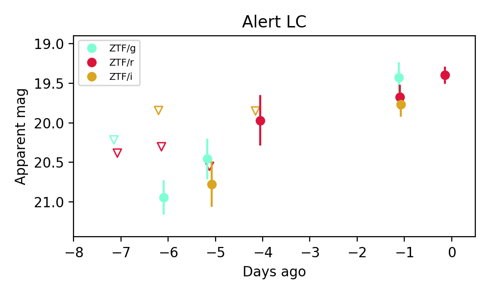
Extinction-corrected gr color:
From alerts: -0.29 +/- 0.25 mag
Extinction-corrected gi color:
From alerts: -0.41 +/- 0.25 mag
Extinction-corrected ri color:
From alerts: -0.62 +/- 99 mag
Rise Rate:
g: 0.24 mag/day
r: 0.23 mag/day
i: 0.25 mag/day
Fade Rate:
6. [ZTF] ZTF26abgzawj (FBOT?) [Back to Top] [Share] [Trigger Swift] [Fritz Alert] [Fritz Source] [Lasair]RA, Dec: 233.9221, 12.96227 15h35m41.30s, 12d57m44.16sGalactic (l, b): 20.9878, 49.1326 ext(g-r) = 0.046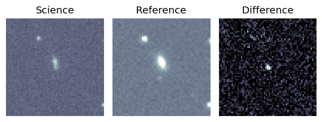
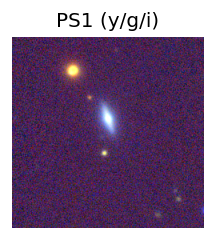
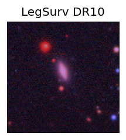
TESS: Sectors 51
NED (10 arcsec):Found NED spec-z: z=0.09; peak abs mag = -18.54
PS1: 0 sources in 3 arcsec
LegacySurvey: 1 sources in 3 arcsec Closest: d = 1.28 arcsec, 293.2 deg (east of north) photoz=0.34 (68% bounds 0.26, 0.48), type=SER peak abs mag = -21.58 (68% bounds -20.91, -22.5)
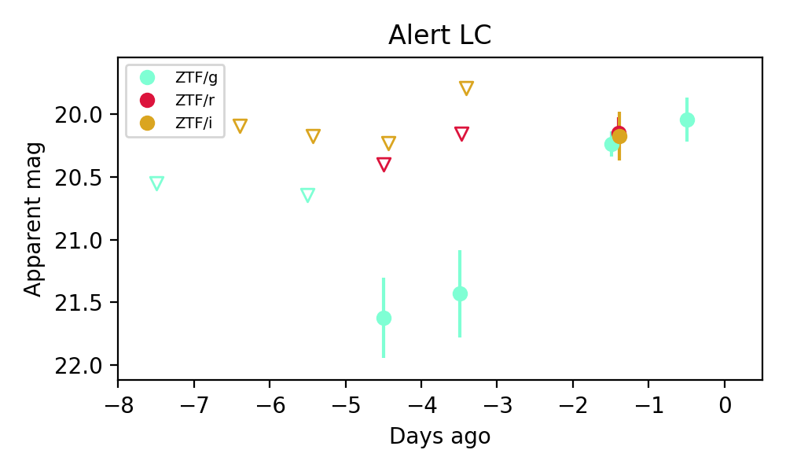
Extinction-corrected gr color:
From alerts: 0.04 +/- 0.16 mag
Extinction-corrected gi color:
From alerts: -0.52 +/- 0.33 mag
Extinction-corrected ri color:
From alerts: -0.05 +/- 0.23 mag
Consistent with synchrotron, g-r>0!
Rise Rate:
g: 0.36 mag/day
r: 0.08 mag/day
Fade Rate:
7. [ZTF] ZTF26abgzodv (Afterglow?) [Back to Top] [Share] [Trigger Swift] [Fritz Alert] [Fritz Source] [Lasair]RA, Dec: 263.74565, -15.85323 17h34m58.96s, -15d-51m-11.63sGalactic (l, b): 9.88205, 8.96179 ext(g-r) = 0.496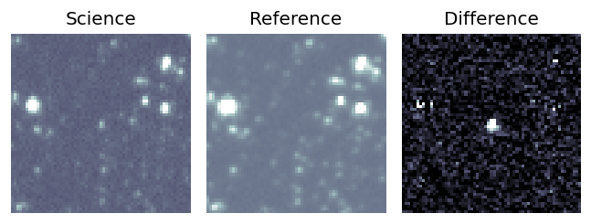
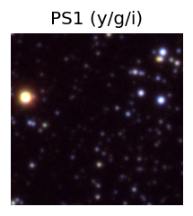

TESS: Sectors [ 91 92 115 116 118]
PS1: 0 sources in 3 arcsec
LegacySurvey: 0 sources in 3 arcsec
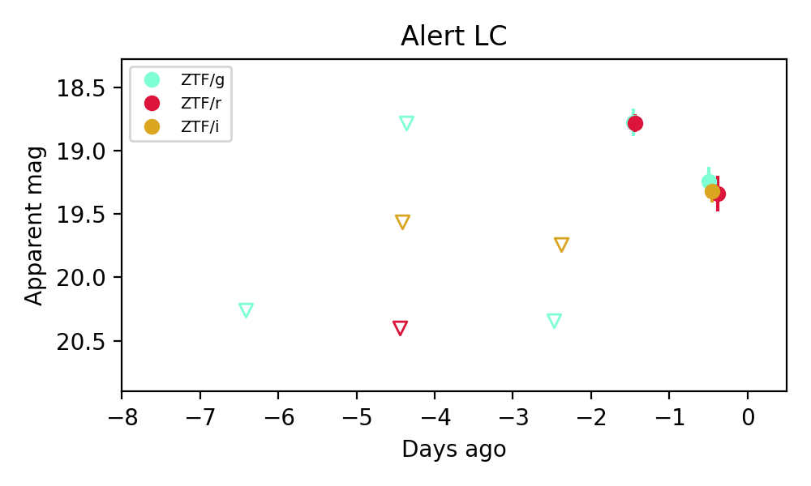
Extinction-corrected gr color:
From alerts: -0.59 +/- 0.18 mag
Extinction-corrected gi color:
From alerts: -0.84 +/- 0.15 mag
Extinction-corrected ri color:
From alerts: -0.25 +/- 0.17 mag
Rise Rate:
g: 1.54 mag/day
r: 0.54 mag/day
i: 0.22 mag/day
Fade Rate:
g: 0.49 mag/day
r: 0.53 mag/day
8. [ZTF] ZTF26abgzsfe (Afterglow?) [Back to Top] [Share] [Trigger Swift] [Fritz Alert] [Fritz Source] [Lasair]RA, Dec: 298.67435, -12.85167 19h54m41.84s, -12d-51m-6.00sGalactic (l, b): 28.25131, -19.74873 ext(g-r) = 0.173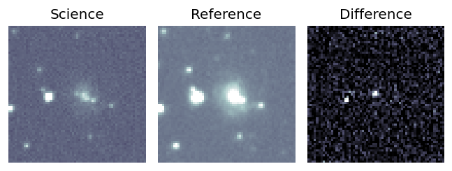
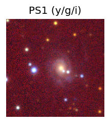
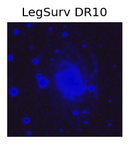
TESS: Sectors [ 54 81 92 116]
NED (10 arcsec):Found NED spec-z: z=0.07; peak abs mag = -18.50
PS1: 0 sources in 3 arcsec
LegacySurvey: 0 sources in 3 arcsec
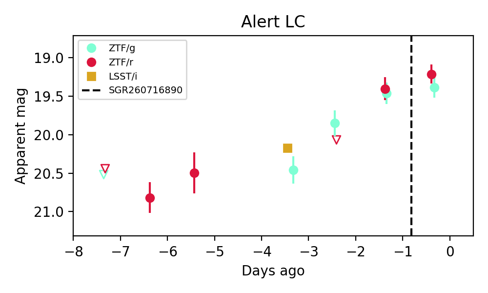
Extinction-corrected gr color:
From alerts: -0.11 +/- 0.2 mag
Extinction-corrected gi color:
From alerts: 0.02 +/- 0.18 mag
Consistent with synchrotron, g-r>0!
Rise Rate:
g: 0.48 mag/day
r: 0.64 mag/day
Fade Rate:
9. [ZTF] ZTF26abgztiu (Afterglow?) [Back to Top] [Share] [Trigger Swift] [Fritz Alert] [Fritz Source] [Lasair]RA, Dec: 290.6741, -0.14409 19h22m41.78s, 0d-8m-38.71sGalactic (l, b): 36.38391, -7.01658 ext(g-r) = 0.439


TESS: Sectors [54 80 81]
PS1: 1 source in 3 arcsec Closest: d = 2.46 arcsec photoz=0.24+/-0.07 peak abs mag = -23.30
LegacySurvey: 0 sources in 3 arcsec

Extinction-corrected gr color:
From alerts: -0.17 +/- 0.21 mag
Extinction-corrected gi color:
From alerts: -0.82 +/- 0.1 mag
Extinction-corrected ri color:
From alerts: -0.09 +/- 0.13 mag
Consistent with synchrotron, g-r>0!
Rise Rate:
g: 1.14 mag/day
r: 1.21 mag/day
i: 0.73 mag/day
Fade Rate:
10. [ZTF] ZTF26abhgsjx (FBOT?) [Back to Top] [Share] [Trigger Swift] [Fritz Alert] [Fritz Source] [Lasair]RA, Dec: 205.41475, 44.90473 13h41m39.54s, 44d54m17.04sGalactic (l, b): 96.74098, 69.58337 ext(g-r) = 0.02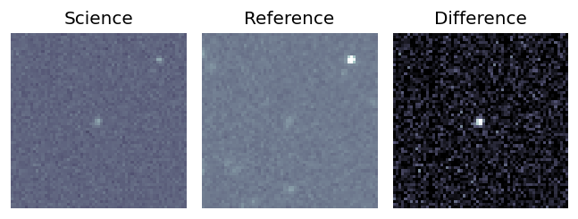
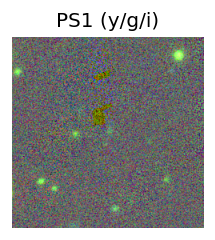
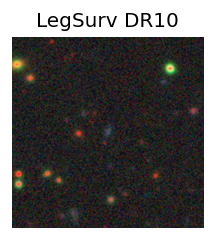
TESS: Sectors [ 16 22 23 49 76 121]
SDSS (<15 kpc):Found SDSS phot-z: z=0.15; peak abs mag = -19.39
PS1: 0 sources in 3 arcsec
LegacySurvey: 1 sources in 3 arcsec Closest: d = 0.06 arcsec, 299.6 deg (east of north) photoz=0.18 (68% bounds 0.1, 0.35), type=DEV peak abs mag = -19.66 (68% bounds -18.21, -21.36)
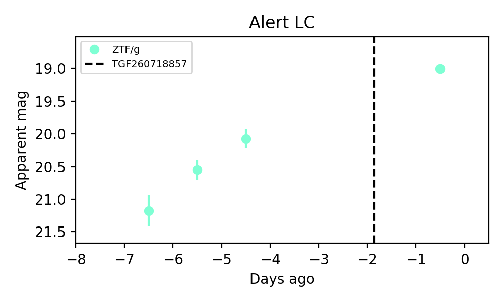
Rise Rate:
g: 0.53 mag/day
Fade Rate:
11. [ZTF] ZTF26abhgxzx (Afterglow?FBOT?) [Back to Top] [Share] [Trigger Swift] [Fritz Alert] [Fritz Source] [Lasair]RA, Dec: 246.94548, 30.49332 16h27m46.92s, 30d29m35.94sGalactic (l, b): 50.51404, 42.93902 ext(g-r) = 0.022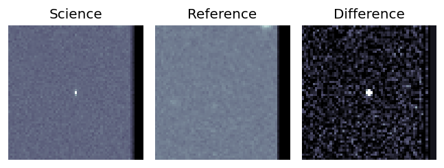
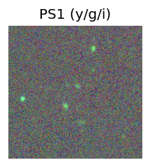
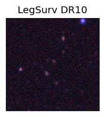
TESS: Sectors [ 24 25 51 52 78 79 117]
SDSS (<15 kpc):Found SDSS phot-z: z=0.46; peak abs mag = -23.61
PS1: 0 sources in 3 arcsec
LegacySurvey: 1 sources in 3 arcsec Closest: d = 2.40 arcsec, 337.3 deg (east of north) photoz=0.93 (68% bounds 0.84, 1.02), type=EXP peak abs mag = -25.42 (68% bounds -25.15, -25.68)
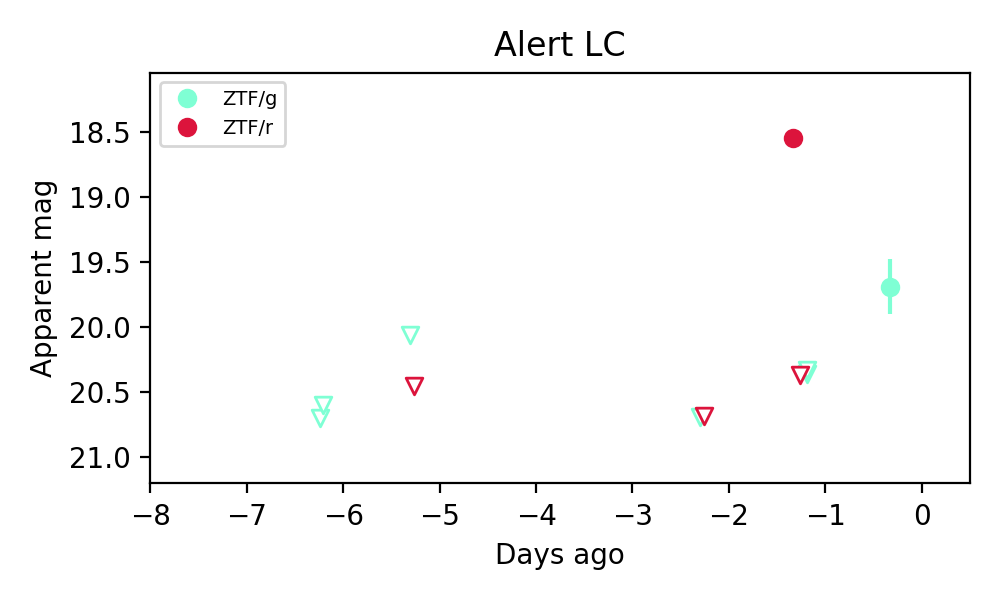
Extinction-corrected gr color:
From alerts: 1.8 +/- 99 mag
Rise Rate:
g: 0.78 mag/day
r: 2.33 mag/day
Fade Rate:
r: 24.33 mag/day
12. [ZTF] ZTF26abhgzpe (FBOT?) [Back to Top] [Share] [Trigger Swift] [Fritz Alert] [Fritz Source] [Lasair]RA, Dec: 236.2832, 53.40164 15h45m7.97s, 53d24m5.92sGalactic (l, b): 84.53183, 48.71685 ext(g-r) = 0.017


TESS: Sectors [16 23 24 49 50 51 76 77 78]
SDSS (<15 kpc):Found SDSS phot-z: z=0.11; peak abs mag = -19.21
PS1: 0 sources in 3 arcsec
LegacySurvey: 1 sources in 3 arcsec Closest: d = 1.84 arcsec, 18.4 deg (east of north) photoz=0.91 (68% bounds 0.52, 1.24), type=PSF peak abs mag = -24.43 (68% bounds -22.93, -25.25)

Extinction-corrected gr color:
From alerts: 0.07 +/- 0.16 mag
Consistent with synchrotron, g-r>0!
Rise Rate:
g: 0.35 mag/day
r: 0.36 mag/day
Fade Rate:
13. [ZTF] ZTF26abhhdki (Afterglow?) [Back to Top] [Share] [Trigger Swift] [Fritz Alert] [Fritz Source] [Lasair]RA, Dec: 274.36483, 36.0714 18h17m27.56s, 36d 4m17.03sGalactic (l, b): 63.3618, 22.00838 ext(g-r) = 0.045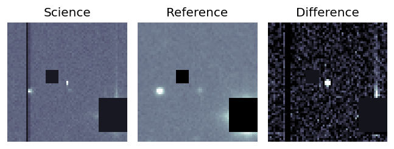
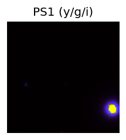
TESS: Sectors [ 26 40 53 54 79 80 118 119]
PS1: 0 sources in 3 arcsec
LegacySurvey: 1 sources in 3 arcsec Closest: d = 4.18 arcsec, 197.5 deg (east of north) photoz=1.7 (68% bounds 0.03, 2.12), type=PSF peak abs mag = -26.21 (68% bounds -15.93, -26.8)
Extinction-corrected gr color:
From alerts: 1.35 +/- 99 mag
Rise Rate:
g: 1.21 mag/day
r: 0.52 mag/day
Fade Rate:
r: 1.32 mag/day
14. [ZTF] ZTF26abhicjr (FBOT?) [Back to Top] [Share] [Trigger Swift] [Fritz Alert] [Fritz Source] [Lasair]RA, Dec: 268.23769, 2.0442 17h52m57.05s, 2d 2m39.13sGalactic (l, b): 28.00917, 13.93308 ext(g-r) = 0.335
TESS: Sectors [ 80 118]
PS1: 1 source in 3 arcsec Closest: d = 8.40 arcsec photoz=0.25+/-0.14 peak abs mag = -21.82
LegacySurvey: 0 sources in 3 arcsec
Extinction-corrected gr color:
From alerts: -1.52 +/- 99 mag
Extinction-corrected gi color:
From alerts: 1.02 +/- 99 mag
Extinction-corrected ri color:
From alerts: 1.45 +/- 99 mag
Rise Rate:
i: 0.96 mag/day
Fade Rate:
15. [ZTF] ZTF26abhidse (Afterglow?) [Back to Top] [Share] [Trigger Swift] [Fritz Alert] [Fritz Source] [Lasair]RA, Dec: 266.60448, -2.85772 17h46m25.08s, -2d-51m-27.78sGalactic (l, b): 22.77088, 13.06614 ext(g-r) = 0.791
TESS: Sectors 118
PS1: 0 sources in 3 arcsec
LegacySurvey: 0 sources in 3 arcsec
Extinction-corrected gr color:
From alerts: -1.23 +/- 99 mag
Extinction-corrected gi color:
From alerts: 0.36 +/- 99 mag
Rise Rate:
g: 0.58 mag/day
i: 1.28 mag/day
Fade Rate:
g: 0.72 mag/day
16. [ZTF] ZTF26abhihyo (FBOT?) [Back to Top] [Share] [Trigger Swift] [Fritz Alert] [Fritz Source] [Lasair]RA, Dec: 310.05079, 2.90679 20h40m12.19s, 2d54m24.45sGalactic (l, b): 48.84275, -22.52242 ext(g-r) = 0.097
TESS: Sectors [55 81]
SDSS (<15 kpc):Found SDSS phot-z: z=0.27; peak abs mag = -21.63
PS1: 0 sources in 3 arcsec
LegacySurvey: 1 sources in 3 arcsec Closest: d = 0.97 arcsec, 57.9 deg (east of north) photoz=0.23 (68% bounds 0.23, 0.24), type=SER peak abs mag = -21.08 (68% bounds -21.02, -21.19)
Extinction-corrected gi color:
From alerts: -0.62 +/- 99 mag
Extinction-corrected ri color:
From alerts: -0.27 +/- 99 mag
Rise Rate:
i: 1.72 mag/day
Fade Rate:
17. [ZTF] ZTF26abhiiba (Afterglow?) [Back to Top] [Share] [Trigger Swift] [Fritz Alert] [Fritz Source] [Lasair]RA, Dec: 296.68448, 2.96542 19h46m44.27s, 2d57m55.53sGalactic (l, b): 42.00491, -10.88245 ext(g-r) = 0.236
TESS: Sectors 81
PS1: 0 sources in 3 arcsec
LegacySurvey: 0 sources in 3 arcsec
Extinction-corrected gr color:
From alerts: 0.6 +/- 99 mag
Extinction-corrected gi color:
From alerts: -0.0 +/- 0.45 mag
Extinction-corrected ri color:
From alerts: -0.61 +/- 99 mag
Consistent with synchrotron, g-r>0!
Rise Rate:
i: 1.35 mag/day
Fade Rate:
18. [ZTF] ZTF26abhinpe (Afterglow?) [Back to Top] [Share] [Trigger Swift] [Fritz Alert] [Fritz Source] [Lasair]RA, Dec: 287.8705, -8.92546 19h11m28.92s, -8d-55m-31.65sGalactic (l, b): 27.20273, -8.48453 ext(g-r) = 0.415
TESS: Sectors [54 80]
PS1: 0 sources in 3 arcsec
LegacySurvey: 0 sources in 3 arcsec
Extinction-corrected gr color:
From alerts: -0.53 +/- 0.18 mag
Extinction-corrected gi color:
From alerts: -0.57 +/- 0.2 mag
Extinction-corrected ri color:
From alerts: -0.04 +/- 0.19 mag
Consistent with synchrotron, g-r>0!
Rise Rate:
g: 0.35 mag/day
r: 0.93 mag/day
i: 0.26 mag/day
Fade Rate:
19. [ZTF] ZTF26abhkojv (Afterglow?) [Back to Top] [Share] [Trigger Swift] [Fritz Alert] [Fritz Source] [Lasair]RA, Dec: 336.27187, 46.12392 22h25m5.25s, 46d 7m26.10sGalactic (l, b): 98.16174, -9.59061 ext(g-r) = 0.252
TESS: Sectors [16 56 57 76 77 83 84]
PS1: 0 sources in 3 arcsec
LegacySurvey: 0 sources in 3 arcsec
Extinction-corrected gr color:
From alerts: -0.52 +/- 99 mag
Rise Rate:
g: 0.95 mag/day
r: 1.14 mag/day
Fade Rate:
r: 0.48 mag/day
20. [ZTF] ZTF26abhlaue (Afterglow?) [Back to Top] [Share] [Trigger Swift] [Fritz Alert] [Fritz Source] [Lasair]RA, Dec: 304.34987, -1.64087 20h17m23.97s, -1d-38m-27.13sGalactic (l, b): 41.58193, -19.81389 ext(g-r) = 0.122
TESS: Sectors [54 81]
PS1: 0 sources in 3 arcsec
LegacySurvey: 0 sources in 3 arcsec
Extinction-corrected gr color:
From alerts: -0.51 +/- 0.2 mag
Extinction-corrected gi color:
From alerts: -0.65 +/- 0.18 mag
Extinction-corrected ri color:
From alerts: -0.14 +/- 0.21 mag
Consistent with synchrotron, g-r>0!
Rise Rate:
g: 1.07 mag/day
r: 1.14 mag/day
i: 0.01 mag/day
Fade Rate:
21. [ZTF] ZTF26abhlesy (FBOT?) [Back to Top] [Share] [Trigger Swift] [Fritz Alert] [Fritz Source] [Lasair]RA, Dec: 296.63166, 29.39751 19h46m31.60s, 29d23m51.03sGalactic (l, b): 65.06239, 2.24865 ext(g-r) = 1.703
TESS: Sectors [ 14 41 54 74 75 81 119 120]
PS1: 1 source in 3 arcsec Closest: d = 2.76 arcsec photoz=0.19+/-0.02 peak abs mag = -25.62
LegacySurvey: 0 sources in 3 arcsec
Rise Rate:
g: 0.81 mag/day
Fade Rate:
22. [ZTF] ZTF26abhllfe (FBOT?) [Back to Top] [Share] [Trigger Swift] [Fritz Alert] [Fritz Source] [Lasair]RA, Dec: 324.68645, 53.17716 21h38m44.75s, 53d10m37.77sGalactic (l, b): 96.40446, 0.53233 ext(g-r) = 1.904
TESS: Sectors [ 16 56 57 76 77 83 84 121]
PS1: 1 source in 3 arcsec Closest: d = 3.89 arcsec photoz=0.04+/-0.00 peak abs mag = -22.39
LegacySurvey: 0 sources in 3 arcsec
Extinction-corrected gr color:
From alerts: -2.98 +/- 99 mag
Rise Rate:
g: 2.11 mag/day
Fade Rate:
23. [ZTF] ZTF26abhlpca (Afterglow?) [Back to Top] [Share] [Trigger Swift] [Fritz Alert] [Fritz Source] [Lasair]RA, Dec: 291.55244, 61.62935 19h26m12.59s, 61d37m45.65sGalactic (l, b): 93.00103, 19.71245 ext(g-r) = 0.06
TESS: Sectors [ 14 15 16 17 18 19 20 21 23 24 25 26 40 41 47 48 49 50
51 52 53 54 55 56 57 58 59 60 73 74 75 76 77 78 79 80
81 82 83 84 85 86 117 118 119 120]
SDSS (<15 kpc):Found SDSS phot-z: z=0.49; peak abs mag = -23.14
PS1: 0 sources in 3 arcsec
LegacySurvey: 1 sources in 3 arcsec Closest: d = 3.19 arcsec, 248.6 deg (east of north) photoz=0.77 (68% bounds 0.71, 0.84), type=EXP peak abs mag = -24.14 (68% bounds -23.9, -24.36)
Extinction-corrected gr color:
From alerts: -2.26 +/- 0.36 mag
Rise Rate:
g: 0.5 mag/day
Fade Rate:
r: 0.21 mag/day